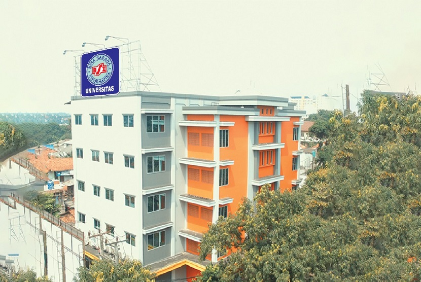
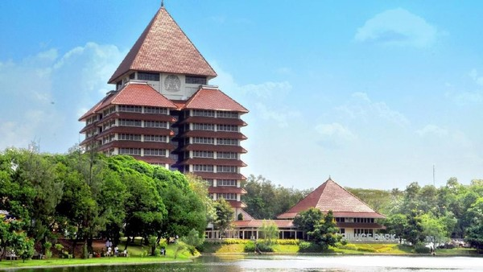
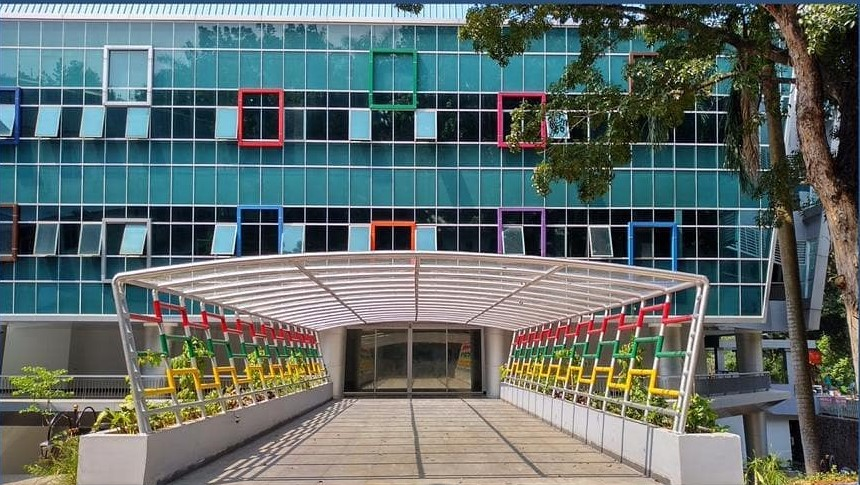
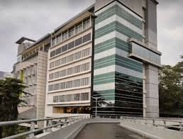
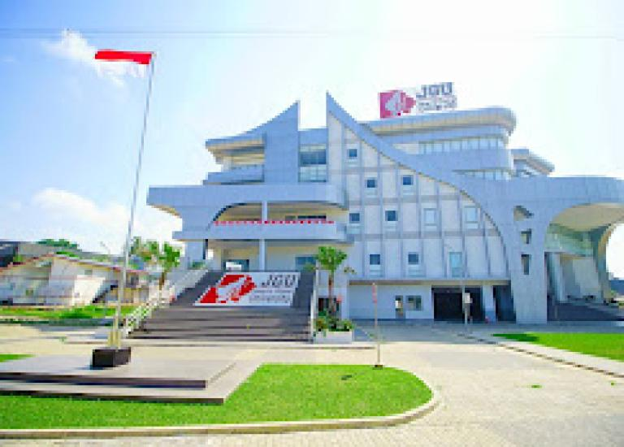
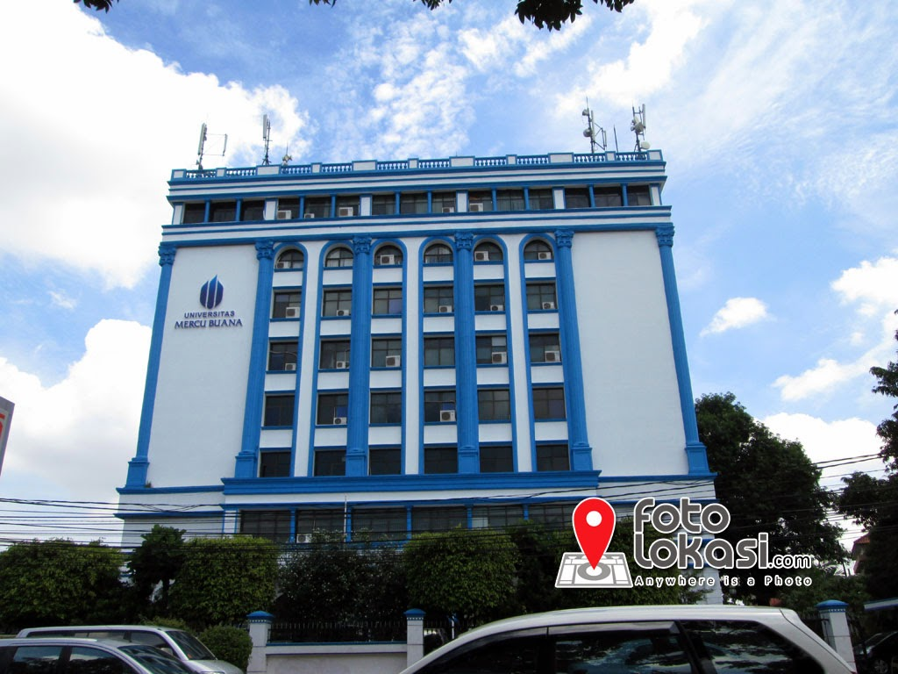
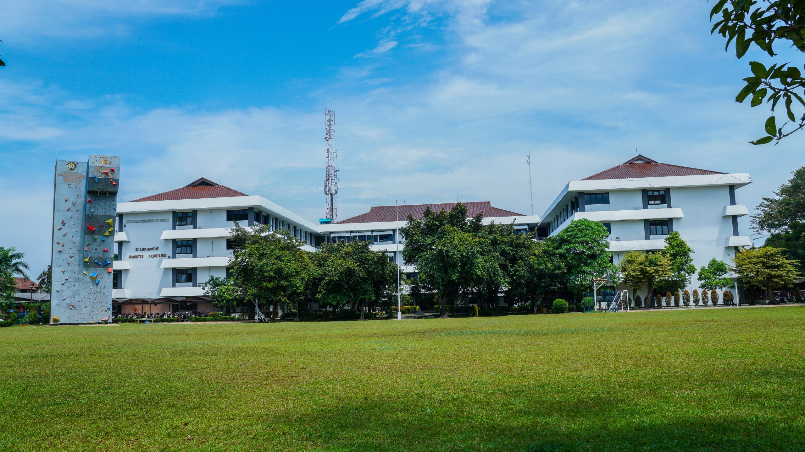
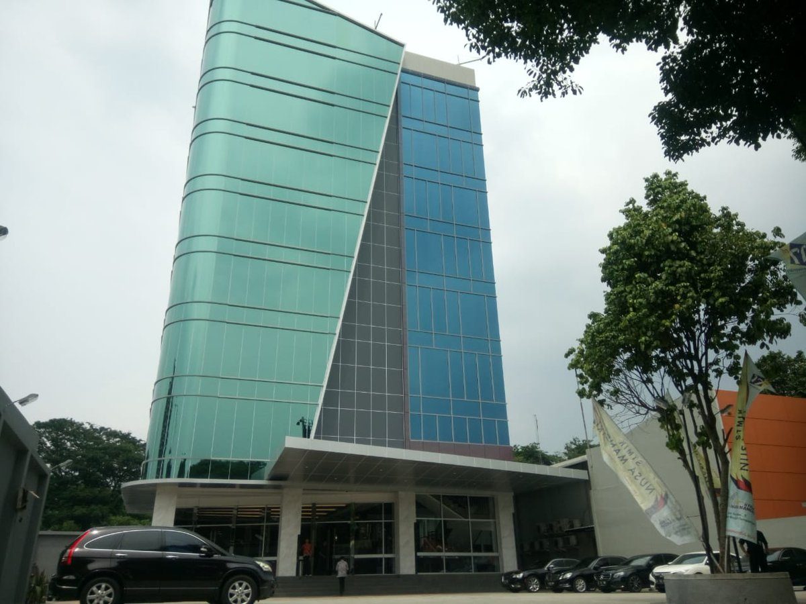
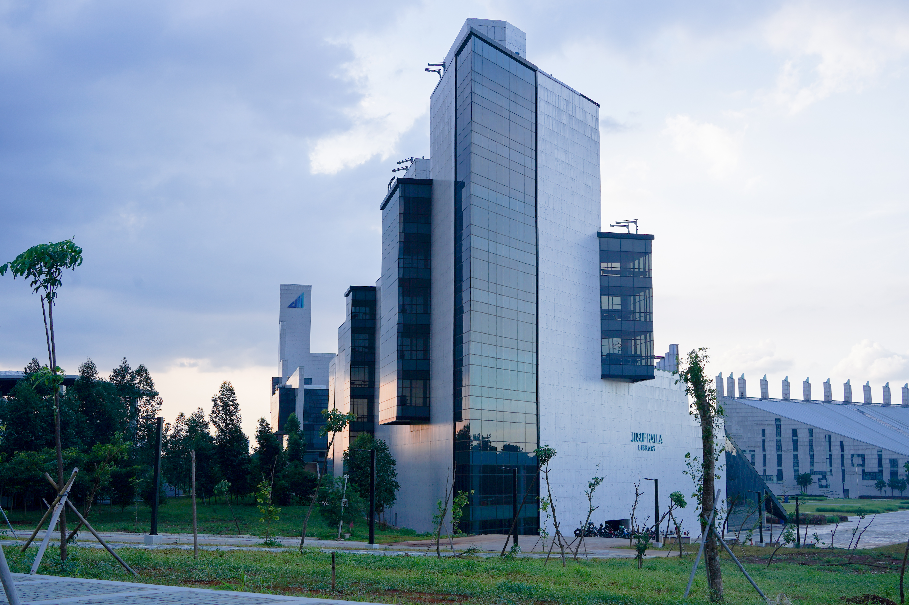

Berikut adalah beberapa perguruan tinggi yang ada di Kota Depok, baik negeri maupun swasta.


Jl. Margonda Raya, Pondok Cina, Kecamatan Beji, Kota Depok, Jawa Barat 16424
View More
Komplek Universitas Indonesia, Jl. Prof. DR. G.A. Siwabessy, Kukusan, Kecamatan Beji, Kota Depok, Jawa Barat 16424.
View More
Jl. Margonda Raya No.100, Pondok Cina, Kec. Beji, Kota Depok, Jawa Barat 16424.
View More
Jl. Boulevard Raya No.2, Grand Depok City, Tirtajaya, Kec. Sukmajaya, Kota Depok, Jawa Barat 16412.
View More



Jl. Raya Bogor, Cisalak, Kec. Sukmajaya, Kota Depok.
View More